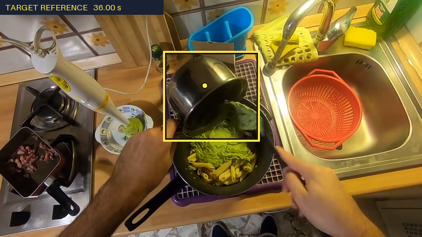

碰撞 · impact0.01 – 0.53 s
置信度 0.74
打开 MP4A/V REVIEW · 本地复核
A-Q1 · 器具声事件
64.12 秒 · 29 条事件 · 自动判断，供复核

指定器具
手中倾斜的小号金属锅本体
指示帧 36.00 s · 标记不代表有声
请选择一个事件
事件列表
碰撞 · impact1.11 – 1.38 s
置信度 0.77
打开 MP4碰撞 · impact2.18 – 4.11 s
置信度 0.81
打开 MP4碰撞 · impact5.55 – 6.80 s
置信度 0.91
打开 MP4碰撞 · impact7.24 – 10.88 s
置信度 0.90
打开 MP4碰撞 · impact12.26 – 12.64 s
置信度 0.76
打开 MP4摩擦 · friction13.46 – 14.44 s
置信度 0.74
打开 MP4碰撞 · impact17.00 – 17.27 s
置信度 0.85
打开 MP4碰撞 · impact17.73 – 17.91 s
置信度 0.76
打开 MP4碰撞 · impact18.39 – 18.54 s
置信度 0.76
打开 MP4碰撞 · impact19.25 – 20.73 s
置信度 0.81
打开 MP4碰撞 · impact21.25 – 24.87 s
置信度 0.84
打开 MP4摩擦 · friction27.50 – 27.88 s
置信度 0.76
打开 MP4碰撞 · impact27.98 – 29.93 s
置信度 0.85
打开 MP4摩擦 · friction30.10 – 30.36 s
置信度 0.67
打开 MP4碰撞 · impact30.50 – 30.89 s
置信度 0.74
打开 MP4碰撞 · impact32.77 – 33.09 s
置信度 0.82
打开 MP4摩擦 · friction34.20 – 34.99 s
置信度 0.74
打开 MP4摩擦 · friction35.41 – 36.05 s
置信度 0.79
打开 MP4碰撞 · impact39.05 – 39.14 s
置信度 0.70
打开 MP4碰撞 · impact41.85 – 48.73 s
置信度 0.90
打开 MP4碰撞 · impact50.55 – 50.91 s
置信度 0.83
打开 MP4摩擦 · friction52.07 – 52.99 s
置信度 0.79
打开 MP4摩擦 · friction53.42 – 53.83 s
置信度 0.71
打开 MP4碰撞 · impact54.55 – 54.74 s
置信度 0.88
打开 MP4碰撞 · impact56.16 – 56.38 s
置信度 0.89
打开 MP4碰撞 · impact58.54 – 58.84 s
置信度 0.87
打开 MP4摩擦 · friction58.86 – 59.49 s
置信度 0.67
打开 MP4碰撞 · impact63.20 – 63.86 s
置信度 0.72
打开 MP4